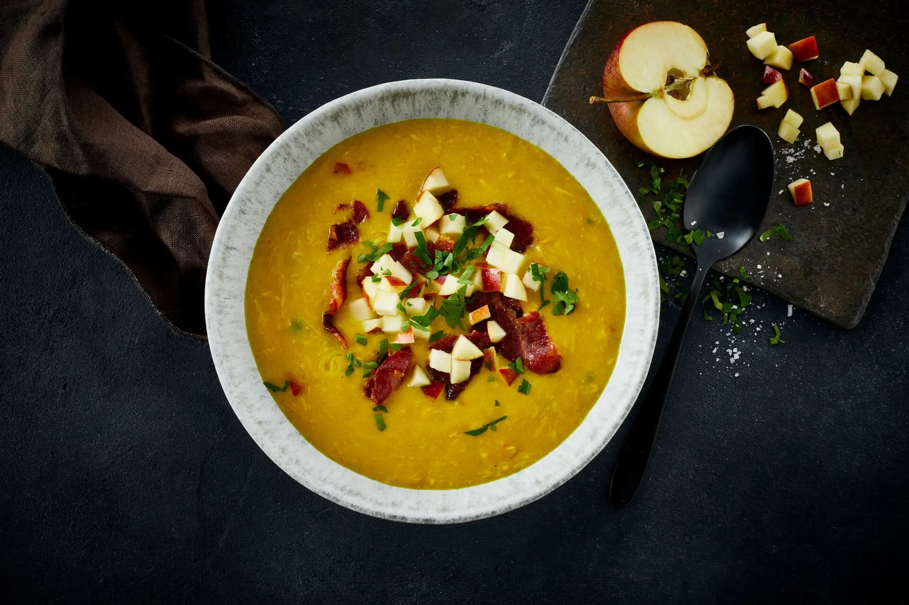

Fremgangsmåde
- Svits karrypasta og citrongræs ved lav varme.
- Tilsæt kokosmælk og bring i kog.
- Kom grøntsagerne i og kog 5 minutter.
- STilsæt bouillon og fiskesauce.
- Smag til med lime.
- Tilsæt andekød og chili, kog 1 minut.
- Drys med koriander og server.